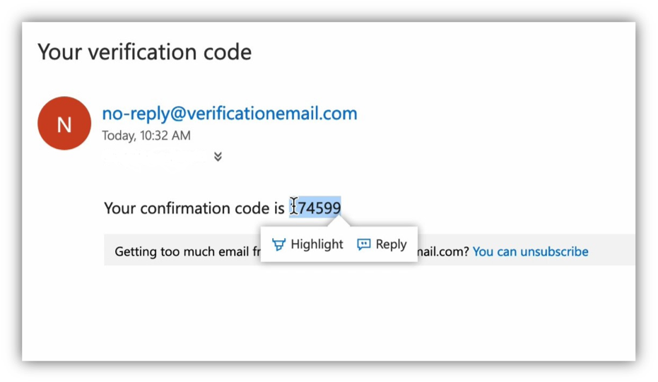
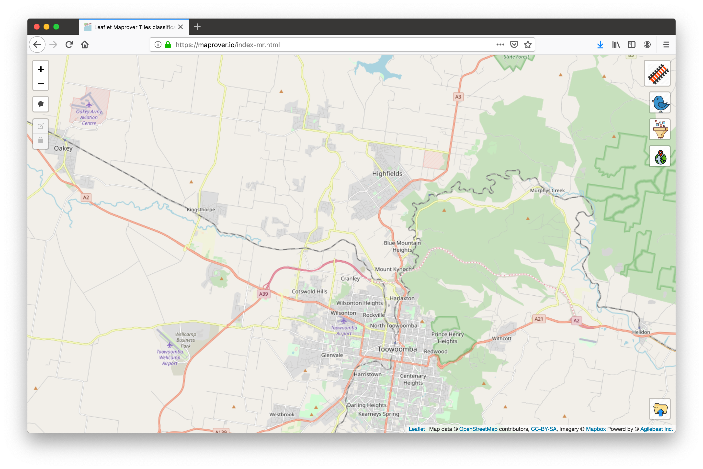
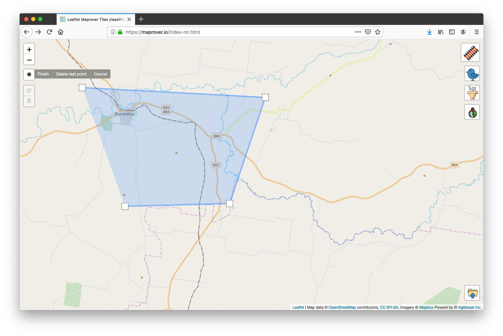
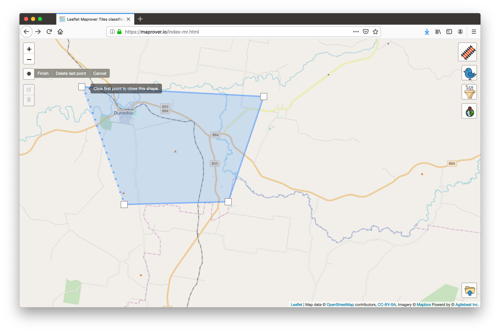
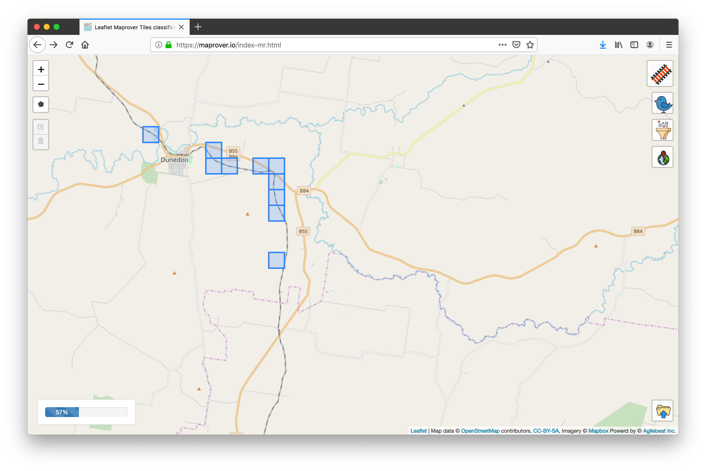
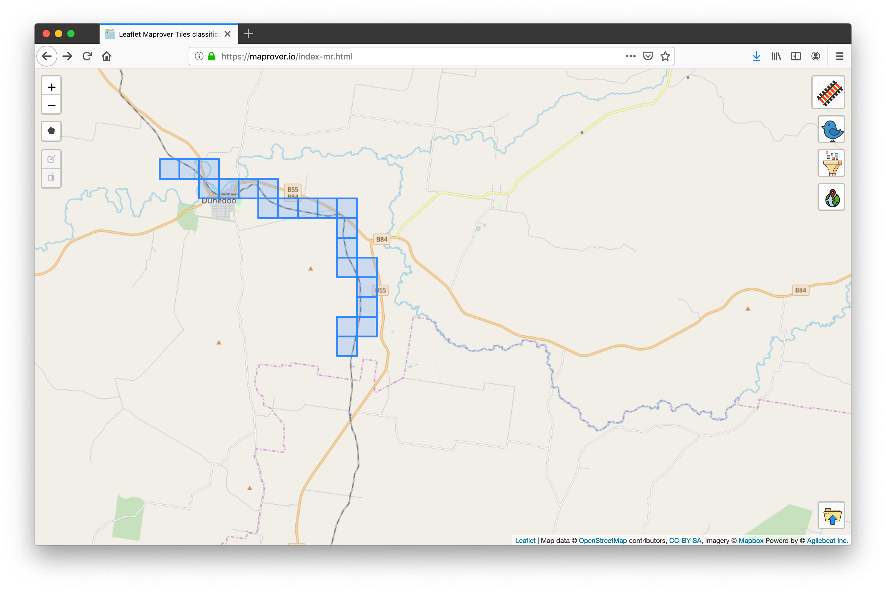
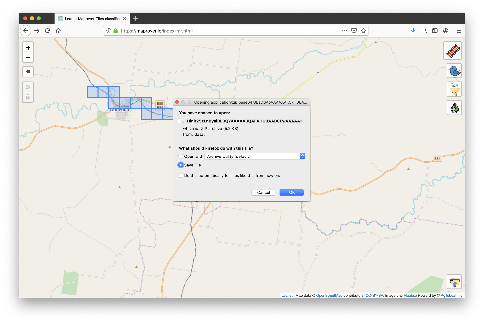
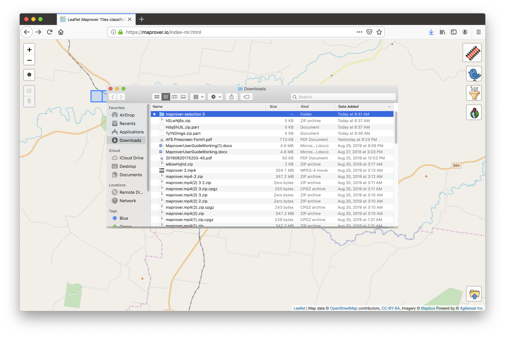

maprover.io
Give yourself the power of geospatial search technology.
Maprover is an innovative search tool that enhances user information-processing capabilities via quick and easy gathering of geospatial context data.
Intuitive and user-friendly, Maprover empowers you by sharply increasing efficiency when it comes to collecting geospatial data. What would otherwise be the time-consuming task of manually finding and recording the location of map items becomes a matter of a few clicks.
Simply highlight the geographic area of interest and allow Maprover to do the rest by finding and locating the search item. Consult the step-by-step user guide below to see just how easy it is to get started.
User Guide
-
Go to https://maprover.io/ to sign in or register.

-
Those who do not have an account are required to register. Follow the registration link on the sign-in
page and enter your email address as your user name. Enter and confirm a personal password. Password
must contain at least 8 characters including at least one upper case letter and one special character.
Click submit.

- Check your email for a verification code. 
-
Enter your email address and verification code on the verification page. The sign-in page will then
appear and you can sign in as usual.

- Select the icon of the item you intend to search for in the upper right corner of the page. In this case the tracks icon, representing railroad lines, has been selected. 
- Next, select the polygon control on the upper left of the page to begin outlining the search area of interest. 
- To begin your search, connect the first and last points of the border of the search area. 
- Search progress is indicated by a status bar that appears in the lower left of the page. Each completed search has a corresponding controller allowing the result set to be hidden or shown, centered on the map, or removed entirely. 
- Each tile marked in the query result corresponds to a map location assoiciated with the search category. 
- Click the icon in the lower right corner of the page to save. 
- File should appear in downloads as a zipped shapefile. 
Questions? Contact office@agilebeat.com